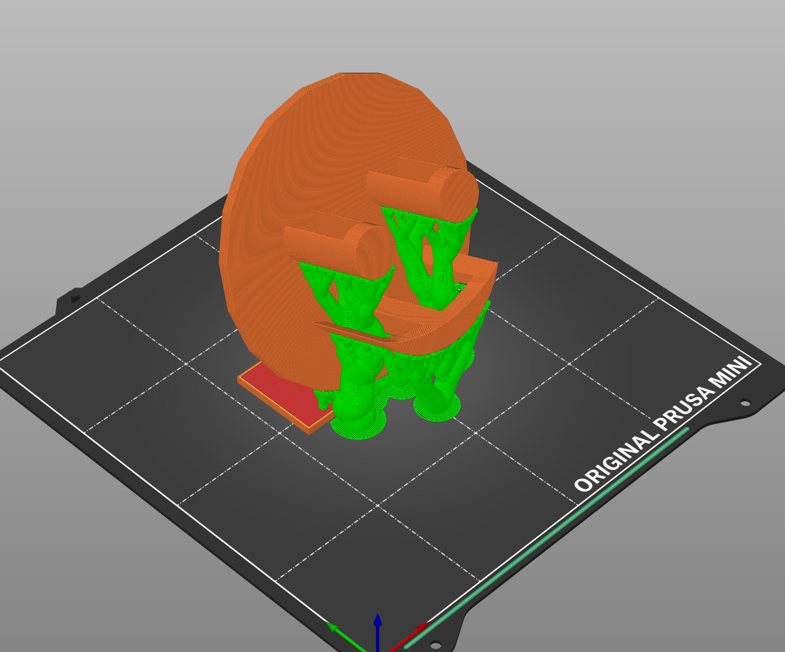
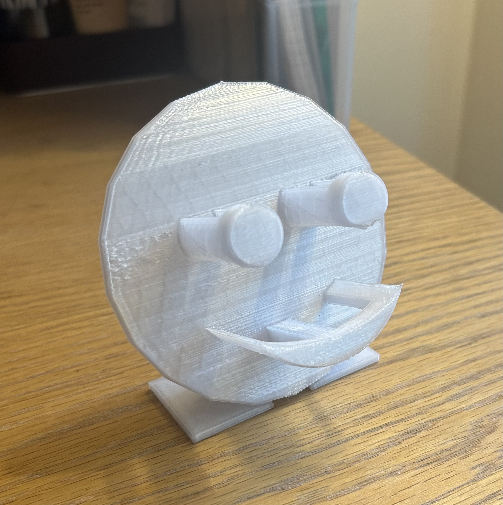
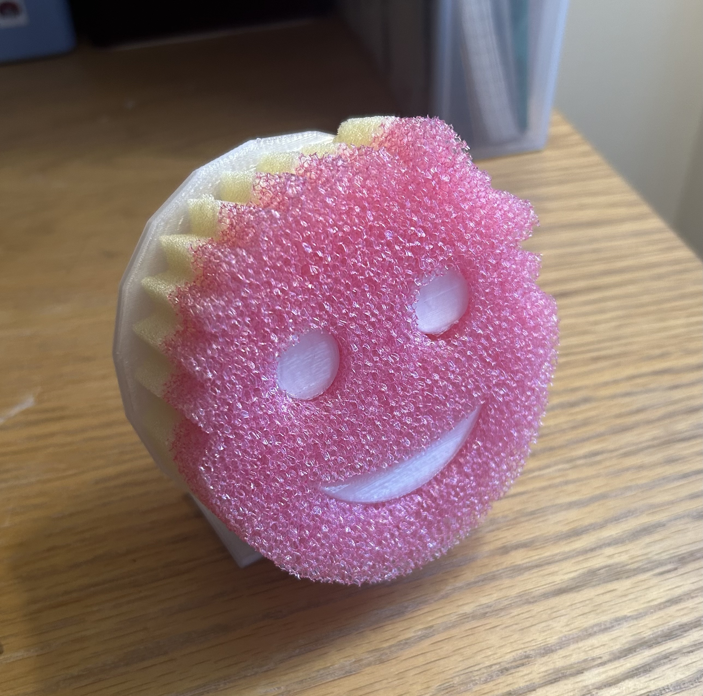
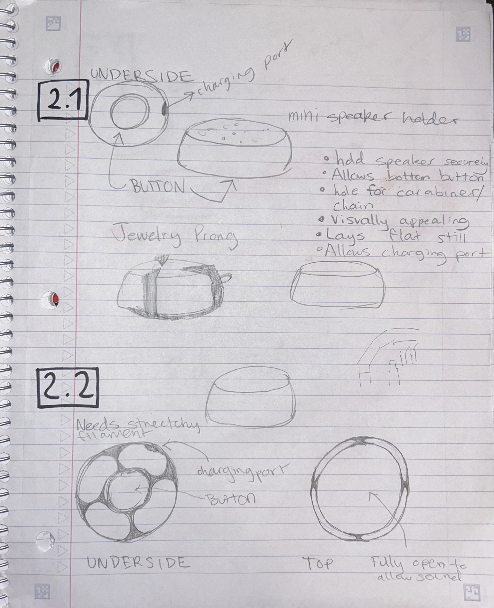
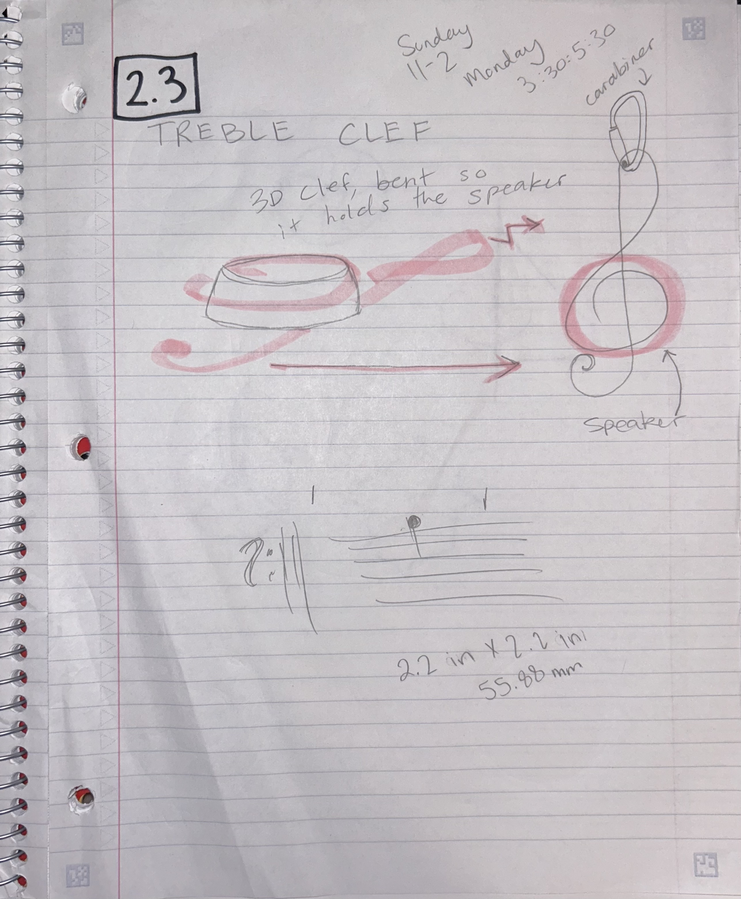
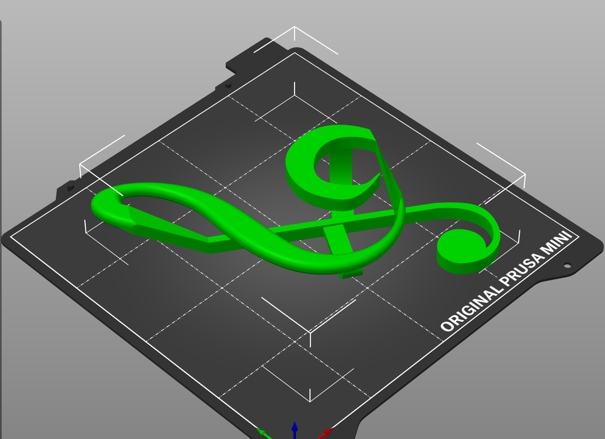
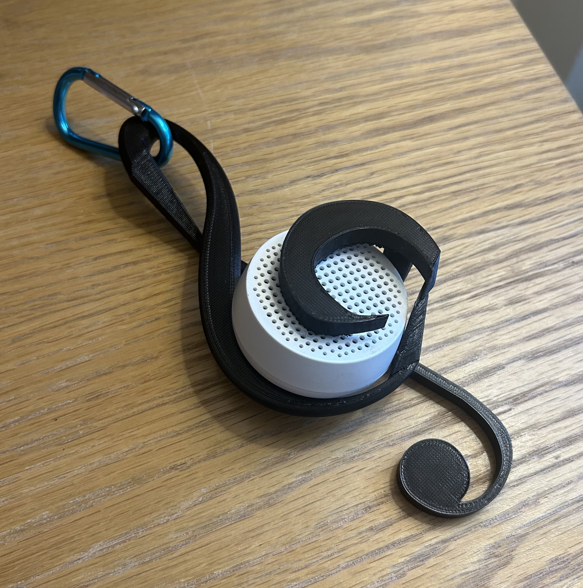

Project 2: Remixing 3D Designs 9/17
Part 2.2: TinkerCAD Remix

TinkerCAD remix
Sponge in Prusaslicer
Final product
In use
Inside my dorm, I didn’t have a place to put my sponge once it was cleaned and I had finished using it. I wanted a small holder to let it dry without damaging any surfaces. I have a smiley face shaped sponge that is a popular product, so I found a premade model in the TinkerCAD community gallery. It was a flat circle with the smiley face correctly spaced to match the product. I added drainage on each of the parts to allow for better drying. I then propped up the face on an angle and made a simple stand. I added organic supports as there would be significant overhang. My first print was unsuccessful, as the original design I remixed hadn’t actually attached the features of the smiley face to the back board at all. It printed separately, and I had to fix the design in TinkerCAD and reprint. The second print was successful, and after trimming off the sharp edges of the mouth of the smiley face, it comfortably fits my sponge. I could optimize this design by updating the stand to a larger tray, catching any stray drops of water that might fall as the sponge dries. I could also slim down the features of the smiley face to allow the sponge to slide on and off more smoothly. Finally, I should coat it in some sort of finish or print with a different type of plastic to make it more water resistant / food safe.
Part 2.3: Fusion 
Early designs
Final design

Treble Clef in Fusion
Treble Clef in Prusaslicer

Final project
In use
When using my mini speaker, my friends and I are often on the go and opt to use the mini speaker because it is more convenient, only for one person to have to carefully hold the speaker as we walk. I wanted to create a holder for my speaker that also had a novelty/aesthetic aspect as it would function secondarily as a bag accessory. Constraints I laid out were as follows: access to the charging port, access to the back on/off button, hole for a carabiner, allows it to sit generally flat on a table, and finally, looks presentable. My first design (2.1) was similar to a diamond setting, three prongs that would grip the speaker rather precariously. I changed this approach, knowing that would require secure joints on each prong. Then, I considered using a different printer entirely so I’d be able to print with a stretchy plastic. I sketched a simple case (2.2) that wrapped around the speaker, trying to keep it minimal but secure. Ultimately, I realized I wanted to focus on the novelty aspect and make something cool to show my friends because making a truly functional case would require more prints and iteration than I had time for. I wanted a design that mimicked its function- a case for a speaker could be interpreted as an item that holds sound. I thought about what tangible item also “holds” sounds and thought of the metronome, lines on sheet music, and then finally the treble clef. After talking to people that can read sheet music, I came to understand it as a marker that tells you which level of pitch the notes are to be played in. I think it visually brackets the notes, “holding” them in a way. The shape of the treble clef naturally had space for a carabiner and a limb to hold the speaker in place, so I settled on that design. I started by bringing in an image of a treble clef and tracing a sketch on top. I modeled a simple version of the speaker itself so I could fit the holder properly around it. I extruded, split it, and raised certain sections to make it three dimensional. I lofted between the raised spots, unable to ever make it a curved loft to match the curves of the clef. I filleted some of the edges and built two supportive arms on the underside of the holder. I created offset planes to sketch the side of the arm and extruded across. In Prusaslicer I added supports and rotated the model diagonally so it would fit in the printer. After printing it once, it was almost a perfect fit. It holds the speaker decently well, it just doesn’t sit perfectly flat. I will fix this design when I get some free time later on. The entire thing needs to be slightly flattened, as there is too much room for the speaker. I need to shave down the inside a bit to allow it to sit flat as well. Other than that, it looks exactly as I imagined. After making those changes, it still will likely break if I am not careful when using it. It is a novelty item but I could consider shrinking it overall and making the curl on the bottom smaller so it won’t break off.